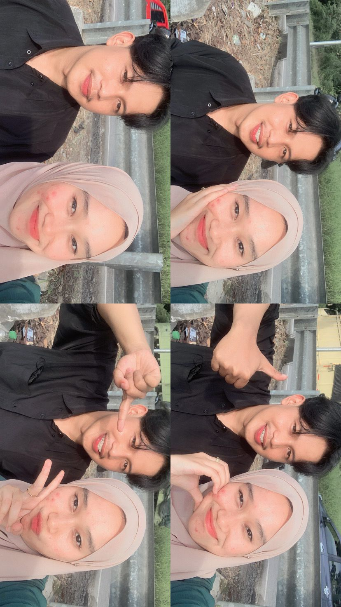
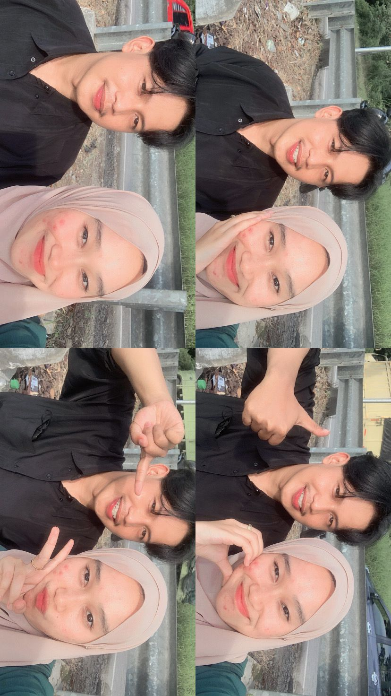

Halo, va.
senang va memutuskan untuk buka web ini...
Hai, va.
mungkin ini bakal jadi hal terakhir yang abang kirim buat va di akhir tahun 2025 ini. sejujurnya rasanya masih berat, karena sampai detik ini pun perasaan abang ke va masih sama sekali ndak berubah. tapi abang sadar, keadaan sekarang memang sudah memaksa kite buat benar-benar selesai.
oh iya, maaf ya va, abang baru bisa kabulin permintaan va buat hapus semua foto dan video kite di hp abang sekarang. jujur kemarin-kemarin abang belum sanggup, tapi hari ini semuanya sudah abang hapus bersih. abang juga minta maaf ya karena setelah ini abang mutusin buat tutup semua akses sosmed ke va. abang tahu kemarin va sempat tutup terus buka lagi, tapi sekarang gantian abang ya? abang cuma butuh ruang buat tenangin diri sendiri dulu.
jauh di lubuk hati abang, abang nggak bohong kalau abang masih sangat mengharapkan va balik. tapi abang juga sadar diri, abang udah banyak kecewain va, udah nyakitin va sampai va nangis. maaf ya kalau ulah abang selama ini bikin va terluka parah.
Beberapa potongan kenangan yang tersisa...
 

(di geser foto nya va)
va, sehat-sehat ya va di sana. tetap semangat buat kejar semua impian yang va mau. abang bakal selalu khawatir sama keadaan va, meskipun cuma bisa dari jauh. makasih buat semuanya, abang pamit ya va, ingat ya, abang sama sekali bukan membatasi komunikasi, kalau va ada perlu wa ndak abang tutup aksesnya.
Menuju tahun yang baru, va yang baru...
video terakhir penutup tahun kita va
tekan tombol play, buat muterin video nya va.
Semoga kamu bahagia selalulululu.